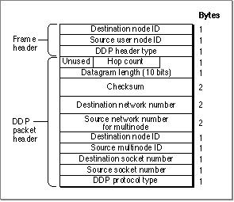
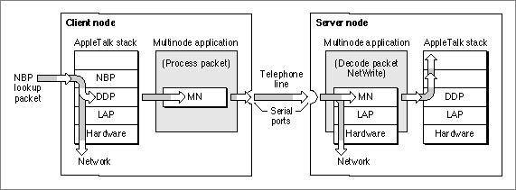

Legacy Document
Important: The information in this document is obsolete and should not be used for new development.
Important: The information in this document is obsolete and should not be used for new development.


About Multinode Architecture
AppleTalk multinode architecture lets you acquire multiple node addresses for a single machine, allowing that machine to act and appear as several nodes on a network. You can think of a multinode as a virtual node and the user node as the physical node. A single machine or physical node can have associated with it one or more multinodes. You can obtain a multinode ID after a node that is running your application connects to the AppleTalk network and AppleTalk assigns the standard user node ID to that system. The use of multinode addresses does not affect the functions of the standard user node address, which uniquely identifies the physical node on the network and forms part of the internet socket address of a DDP socket-client application.Multinode architecture communicates similarly to DDP in that you send data from a multinode as discrete packets, with each packet carrying the full addressing information required to deliver the data to its destination.
Multinode architecture is a client of the data-link layer and all of the supported data-link types. It is connected to the AppleTalk protocol stack from the data-link layer down through the hardware. It is not connected to the AppleTalk protocols above it, and there are no hooks that a multinode application can use to pass a packet up through the AppleTalk protocol stack for processing by a higher-level protocol.
Therefore, a multinode application that receives DDP packets for higher-level AppleTalk protocols must process these packets itself, in its own way. For example, if a multinode application receives an AppleTalk AEP Echoer request packet, it must determine how
to handle the request packet, that is, whether or not to respond to the packet as the AppleTalk Echo Protocol (AEP) implementation does. (For more information on AEP, see the discussion in the chapter "Datagram Delivery Protocol [DDP]" in this book and the AEP protocol specification in Inside AppleTalk, second edition.)After a packet is delivered to the node, the .MPP driver checks the DDP packet header and passes packets addressed to a user node socket on to the appropriate socket listener, while passing packets addressed to a multinode on to the receive routine that you provide as part of your multinode application. Your receive routine must receive both packets addressed to the multinode and broadcast packets. A receive routine is similar
to a socket listener. You must code the receive routine in assembly language because
the .MPP driver passes values to your routine in registers when it calls the routine.Multinode architecture does not provide for the establishing of sessions--that is, the ability to set up a connection and send streams of data over it, nor does it include support for error recovery. If you want these features, you need to provide them in your multinode application.
AppleTalk delivers all packets to the physical node based on the user node ID assigned to the node, which is carried in the frame header as the destination node ID. Multinode architecture always uses a long DDP packet header; Figure 12-1 shows the structure of the long DDP packet header. It also shows the frame header.
Figure 12-1 The long DDP packet header used for multinode

When you send a packet from a multinode:
A packet is always transmitted from the physical node's network hardware, and the frame header contains the user node ID of the physical node that transmitted the packet. Your multinode application uses a multinode ID, which you can think of as a virtual node from which you are sending data. The DDP header identifies this multinode. Your application sends data, but the networking hardware and its device driver actually transmit the packet containing the data across the network to its destination.
- The frame header always contains the source user node ID, which identifies the physical node on the network from which the packet was transmitted.
- The DDP packet header always contains the source multinode ID, which identifies
the virtual multinode from which you are sending the packet.
A single networked machine may have associated with it one or more multinode IDs. Packets sent from several multinode applications running on the same machine include different source multinode IDs, but because they are all transmitted from the same physical node, the packets all have the same source user node ID.
Because the source multinode ID is associated with the application that sent the packet and the source user node ID is associated with the machine that transmitted the packet, the source user node ID in the frame header and the source multinode ID in the DDP packet header are always different values.
To acquire a multinode, you call the
- Note
- Even if the destination node of a packet is on the same LocalTalk network as the source user node, a packet sent from a multinode always contains a long DDP header to allow for the inclusion of the two separate source node IDs: the user node ID and the multinode ID.

AddNoderoutine. You can obtain only one multinode at a time. The number of multinodes that a single machine can support is limited by the maximum number of multinodes supported by the underlying AppleTalk connection file of type'adev'for the data link that is being used:
Because the multinode is considered another unique node ID, the number of multi-
- For LocalTalk, the maximum is 254 node addresses ($0 and $FF are not valid addresses).
- For EtherTalk, TokenTalk, or FDDITalk, the maximum is 253 node addresses ($0, $FF, and $FE are not valid addresses).
nodes that can be acquired is further limited by the number of nodes already active
on the network.As an example of one use of multinodes, consider how a multinode application that includes server and client components might handle a broadcast NBP lookup packet. The following events occur on the user node that runs the client component of the multinode application:
The following events occur on the node that is running the server component of the multinode application.
- A DDP socket-client application on the user node calls an NBP function that generates a broadcast NBP lookup packet.
- The .MPP driver sends the packet out to the network. Because it is a broadcast packet, the .MPP driver also sends the NBP lookup packet to the multinode on the same machine.
- The multinode client application's receive routine receives the packet.
- The multinode client application processes the packet's contents and repackages them in its own multinode packet, which it sends out through the serial port over the modem and telephone line to the multinode application on the server node.
Figure 12-2 illustrates this process.
- The server multinode application receives the multinode packet through the system's serial port.
- This application uses the
NetWriteroutine to decode the multinode packet and uses the packet contents as the data for a DDP packet. It builds the required data structure to contain the data for a standard DDP packet.- The server multinode application then sends the broadcast packet down through
the AppleTalk protocol stack from the link-access layer, through the hardware, and
out to the network for a response. It also sends the packet to the user node on the same machine.
Figure 12-2 How a server-client multinode application might send a broadcast NBP
lookup packet
The primary use of the multinode architecture for an application is to provide router-like services as part of the application. One of the advantages of multinode is that your application receives all Name-Binding Protocol (NBP) request packets because they are broadcast packets. In fact, the first packets that your application is likely to receive are NBP lookup packets. These include NBP register requests that generate an NBP lookup request if the sender specified that NBP should verify the uniqueness of the entity name to be registered. (For an explanation of NBP and its components, see the chapter "Name-
Binding Protocol [NBP]" in this book.)How you handle the NBP lookup packets is application-specific. However, if you want your application to be visible throughout the network, you need to meet certain AppleTalk compatibility requirements. In this case, your application needs to implement the NBP protocol. You can implement your own NBP names table for the multinode to determine if your application handles the services requested in the lookup packet. For example, your application can check to determine if an NBP lookup packet's entity name object and type fields match the object and type fields of any of the entity name entries in your NBP names table. Any response that you return to the requester must conform to the AppleTalk packet format. You may also want to implement the AppleTalk Echo Protocol (AEP), and in this case, too, any responses that you return to the sender must meet the specifications for an AEP AppleTalk packet. (For a description of AEP, see the chapter "Datagram Delivery Protocol [DDP]" in this book.) Inside AppleTalk, second edition, describes how to implement NBP and AEP.